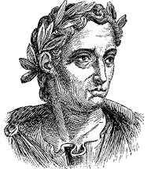
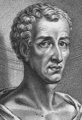

Исторические свидетельства существования Иисуса Христа
<< в началоПродолжение:
Плиний Младший (61-113 гг.) - римский правитель в провинции Вифиния. В своем письме императору Траяну он пишет:
С теми, на кого доносили мне, что они христиане, я поступал следующим образом. Я спрашивал их, являются ли они христианами. Если они сознавались, я спрашивал их во второй раз и в третий раз, угрожая им наказанием. Если они продолжали оставаться при своем убеждении, я приказывал их казнить. Потому что я уверен, что в чем бы ни состояла их вера, но их упорство и неуступчивость несомненно заслуживают наказания. Некоторые из этих безумцев, правда, были Римскими гражданами, и я назначил их к отправке в Рим. ...
Они утверждали, что суть их вины была в том, что они собирались в определенный день перед рассветом и пели гимны Христу как Богу, и клятвенно обещали не совершать никакого преступления, ни обмана, ни воровства, ни измены, не нарушать своего слова, или того, что им доверили. После этого они расходились и позже снова собирались для принятия пищи; они ели обычную пищу. Но даже это они перестали делать после того, как, согласно твоему повелению, я издал указ о запрещении политических собраний. Однако я решил убедиться в том, насколько это правда, и для этого подверг пыткам двух рабынь, которых называли диаконисами. Но ничего от них я не выведал кроме порочного и безмерного суеверия. Поэтому, я решил отложить расследование и прибегнуть к твоему совету. Я решил, что стоит посоветоваться с тобой, потому что довольно большое количество тех, кто замешаны в этом деле. Многие люди разного возраста, разного положения, как мужчины так и женщины, увлечены этим. Зараза этого суеверия распространилась не только в городах, но и в сельских местностях, но я думаю, что ее можно остановить.[1]
Мара бар Серапион - философ из римской провинции Сирия. Между 73 и 200 гг. им было написано письмо, адресованное его сыну Серапиону, в котором он пишет:
Что приобрели Афиняне, убив Сократа? На их землю пришла чума и голод после этого. Что приобрели люди Самоса после того, как сожгли Пифагора? В одно мгновение вся их страна оказалась покрыта песками. А что приобрели Иудеи, казнив своего мудрого Царя? Вскоре после этого их царство погибло. Бог справедливо отомстил за этих трех мудрых людей: Афиняне умерли из-за голода, море потопило Самос, а Иудеи, будучи разорены и изгнаны из своей земли, теперь живут в рассеянии.[2]
В те времена многие слышали об Иисусе Христе как об Иудейском Царе. Даже когда Иисус был распят, то ко кресту была прибита надпись, говорящая о Его вине. И в этой надписе говорилось об Иисусе как об Иудейском Царе тоже. В Новом Завете это описывается так:
Пилат же написал и надпись, и поставил на кресте. Написано было: Иисус Назорей, Царь Иудейский. Эту надпись читали многие из Иудеев, потому что место, где был распят Иисус, было недалеко от города, и написано было по-еврейски, по-гречески, по-римски. Первосвященники же Иудейские сказали Пилату: не пиши: Царь Иудейский, но что Он говорил: Я Царь Иудейский. Пилат отвечал: что я написал, то написал. (Евангелие от Иоанна 19:19-22)
Лукиан (120-180 гг.) - греческий писатель-сатирик, написал сатирическое произведение под названием О кончине Перегрина
, в котором автор высмеивает наивное добродушие христиан.
Они (христиане) все еще поклоняются человеку, который был распят в Палестине за то, что создал свое новое учение.[3]
Когда он (Протей) был посажен в тюрьму, то Христиане отнеслись к этому как к страшному несчастью, и преложили все усилия, чтобы освободить его. Когда же это оказалось невозможным, то они стали с большой заботой всячески ухаживать за ним. С раннего утра у его камеры собирались пожилые вдовы и дети-сироты, а их главари даже ночи проводили с ним в тюрьме, подкупив стражу. Потом к нему приносили разнообразные блюда, и читали для него вслух их священные книги. Высокочтимый Перегрин - тогда он еще назывался этим именем - именовался у них.[4]новым Сократом. И даже приходили к нему люди из городов Малой Азии, посланные Христианами за их общий счет, чтобы помочь ему, выступив в его защиту, и ободрить его. Они проявляют удивительную быстроту, когда случается какое-то происшествие, и прямо-таки ничего не жалеют. ... Их первый законодатель убедил их, что все они становятся друг другу братьями, после того, как отрекутся от греческих богов и начнут поклоняться своему распятому мудрецу и жить по его законам
Все выше перечисленные историки и писатели были нехристианами. Но существовали также и христианские историки, которые писали об Иисусе Христе намного больше. К ним относятся: Климент Римский, Ириней Лионский, Юлий Африкан, Тертуллиан - все они жили в период между 30 и 240 гг. н.э.
Читать дальше:
- о Библии:
Другие статьи в разделе Наука о Боге
:
- о Боге:
Список литературы:
- [1] Pliny the Younger. Letter 10.96. Латинский текст на thelatinlibrary.com/pliny.html и перевод на англ. на sourcebooks.fordham.edu/halsall/source/pliny1.asp
- [2] Mara Bar-Serapion. Letter. earlychristianwritings.com/text/mara.html
- [3] Lucian. The passing of Peregrinus 11, tertullian.org/rpearse/lucian/peregrinus.htm
- [4] Lucian. The passing of Peregrinus 12-13, та же ссылка.